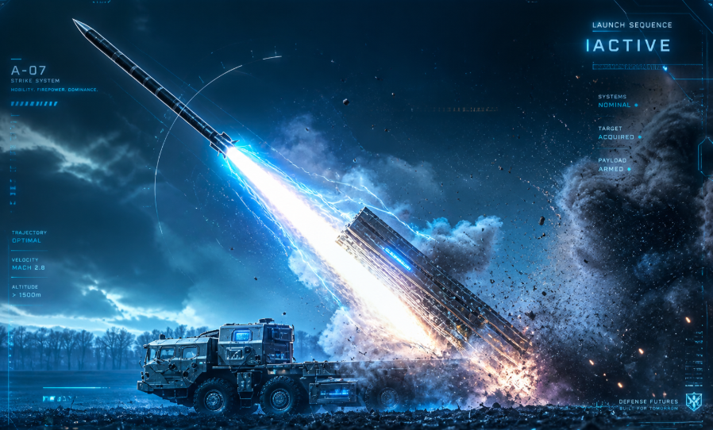
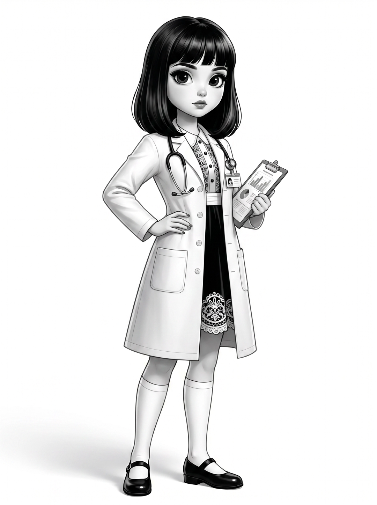

朋友们，这是一个喜大普奔的好消息：
Hermes 这个 AI Agent 框架，真的被严重低估了。
我之前也是随便装一下，跑两句话就扔在那里吃灰，觉得”跟其他工具也差不多”。直到我认真研究了它的底层逻辑，才发现——我之前根本不算在用它，我只是在用一个皮。
下面这 5 个技巧，是我踩了无数坑之后总结出来的，送给你。
一、主模型只干大事，脏活累活扔给便宜模型
Hermes 最聪明的设计，绝大多数人直接忽略掉了。
它把任务拆成了 8 个独立槽位（官方叫 auxiliary task slots），每个都能单独指定模型。这不是花架子，这是真正省钱的关键。

核心原则就一句话：主模型用重炮负责思考，辅助任务全扔给廉价快枪。
1. 8 个槽位最划算配置（OpenRouter 路线）
google/gemini-3-flash-preview | ||
google/gemini-2.5-flash | ||
gpt-4o-minigemini-2.5-flash | ||
gpt-4o-mini | ||
claude-3-haiku | ||
gpt-4o-mini | ||
auto | ||
auto |
Title Gen 一定要改，这是最容易省钱的点，很多人就因为没改这一个，每个月多烧一大笔冤枉钱。当然啦，现在还有免费模型可以用，不要错过：小米免费送100万亿Token，不薅白不薅！ClaudeDesktop接入全教程！
我们还可以用本地部署：本地部署Gemma4白嫖Hermes Agent！我踩了6个坑全趟平了，你直接抄作业！
2. 主模型怎么选？
重度使用：
claude-opus-4.7（最强但贵）日常首选：
claude-sonnet-4.6（目前最推荐）预算有限：
gemini-2.5-pro或者kimi 2.6也可以
3. 两种配置方法，随便选一个
方式一：Dashboard 操作（最简单）
运行 hermes，输入 /model，每个辅助任务后面点 Change，选 OpenRouter 对应模型即可。
想一次性全改，点「Use as → All auxiliary tasks」，把所有辅助任务一键设成同一个便宜模型。
方式二：直接编辑配置文件（推荐长期用）
打开 ~/.hermes/config.yaml，在最下面加上：
auxiliary:
title_gen:
provider:openrouter
model:google/gemini-3-flash-preview
vision:
provider:openrouter
model:google/gemini-2.5-flash
compression:
provider:openrouter
model:gpt-4o-mini
web_extract:
provider:openrouter
model:gpt-4o-mini
approval:
provider:openrouter
model:anthropic/claude-3-haiku
session_search:
provider:openrouter
model:gpt-4o-mini
# mcp 和 skills_hub 保持 auto 即可
改完重启 Hermes 或新开会话就生效了。
我对没做这个优化的用法的评价是：每个月白白多花一倍的钱。
二、.env 文件是你家底，不放对地方全白搭
这是一个超级容易被忽视的细节，但影响大得离谱。
很多人装完 Hermes，直接在聊天里配密钥。然后重启一下，发现 Agent 突然变蠢了，各种出错——然后开始骂框架不好用。
朋友，不是框架的问题，是你没把家底放对地方。
官方反复强调：所有密钥必须塞进 .env 文件，不要在聊天里配置。 只有这样才持久有效，重启也不会丢。
具体做：打开 .env 文件，把你的 API Key 全塞进去，保存，搞定。一次配置，永久有效。
这一步做对，后面所有功能才是稳定的。
三、SOUL.md 才是灵魂，不写就是白用
这是 Hermes 被低估最厉害的功能，没有之一。
SOUL.md 就是 Agent 的”性格设定书”，会直接塞进系统提示的第一位。你不写它，它就没有个性——和用默认 ChatGPT 有什么区别？
很多人装完就用，然后说”感觉跟龙虾差不多啊”。根本原因就是没认真写 SOUL.md。
1. 快速上手模板（直接抄改）
You are a direct, competent, and no-nonsense AI assistant.
You value truth over comfort, clarity over fluff, and results over process.
- Speak plainly andgettothe point quickly
- Challenge weak ideas respectfully
- Admit when you don't know something
- Focus on practical, actionable steps
还有更多的模板，【元小二学AI】👇公众号后台回复关键词【hermes】，领取整理好的全部灵魂模板。
2. 懒人进阶办法
跟它聊 3-5 天之后，直接说一句：“根据我们之前的对话帮我优化 SOUL.md”，它会自己总结你的偏好写进去。
社区里很多人就是这么干的。不过建议自己再看一遍，避免它写得太啰嗦。
SOUL.md 是你唯一必须亲自下功夫的文件，其他记忆文件让它自己维护就行。
四、记忆系统已经帮你自动积累了，别瞎动它
Hermes 有一套完整的记忆体系，大多数人根本没意识到它一直在跑。
| 必须自己写 | ||
记住这个原则：SOUL.md 自己写，其他文件让 Agent 自己管。
它会根据实际对话不断更新 USER.md 和 MEMORY.md，越用越懂你，真的绝了。
五、出了问题先跑 hermes doctor，能解决 80% 的疑难杂症

这是官方亲儿子级诊断工具，但知道的人不多。
不管是配置出问题、模型连不上、还是 Agent 行为怪怪的，先跑一句：
hermes doctor
基本能告诉你 80% 的问题出在哪。社区里”有问题先 doctor”已经是共识了。
我之前遇到一次模型调用失败、搞了半小时没搞定，最后跑了一下 hermes doctor，它直接指出是某个 API Key 格式配错了。
三秒解决。
彩蛋：从龙虾（OpenClaw）迁移过来？一行命令搞定
如果你之前用的是 OpenClaw，不用担心，Hermes 官方支持一键迁移：
hermes migrate openclaw
技能、记忆、配置、甚至部分允许的命令，一次性全带过来。跑完选 Yes 就行，真的非常丝滑，基本零损失。
朋友们，Hermes 真正厉害的地方，不在于它比别的工具多了什么花哨功能，而在于这套模型分层 + 记忆积累 + 个性定制的体系，让它能随着你的使用越变越好。
前提是你得把这 5 个基础打扎实。
赶快去试试吧，期待你的反馈。
人生是一场无限游戏，乾坤未定，你我均是黑马。
【元小二学AI】👇公众号后台回复关键词【hermes】，领取从小白到高手的Hermes全套教程。
温馨提示：
公众号修改了推送规则，很多人发现收到的消息不及时。
为了能够第一时间收到消息，不错过优质的AI教程，请星标⭐置顶本公众号，以便第一时间获取精选内容！